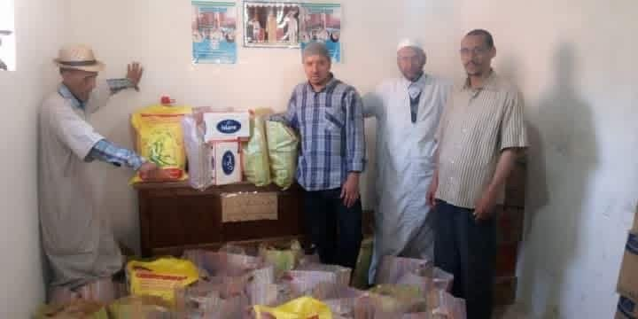
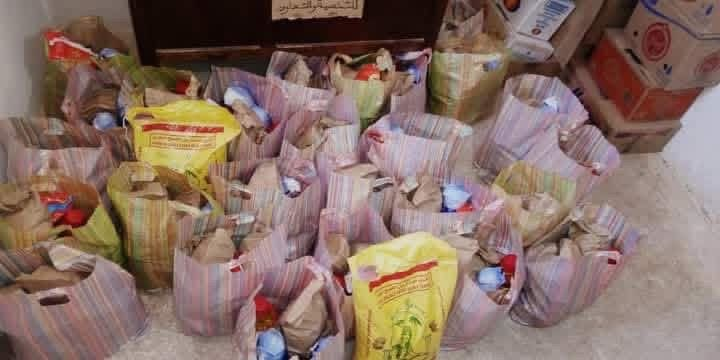
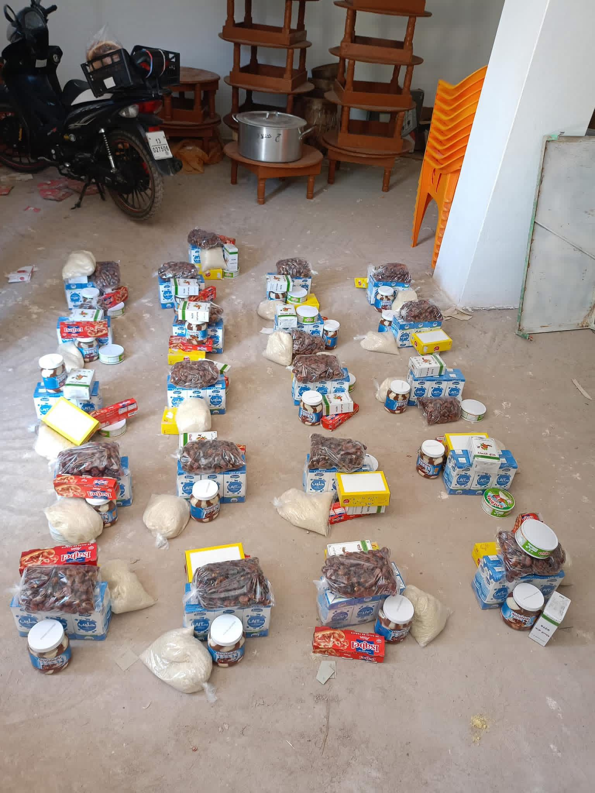

Solidarité durant la pandémie de COVID-19
Actions de sensibilisation, de prévention et de soutien aux familles du douar Tinlaf durant la crise sanitaire.
خلال فترة جائحة كورونا، قامت جمعية تينلاف بدور محوري في حماية ساكنة الدوار وضمان سلامتهم. فقد حرصت الجمعية على توعية السكان بخطورة الوباء وبإجراءات الوقاية اللازمة، من خلال حملات توجيهية هدفها نشر الوعي وتعزيز ثقافة الحذر داخل المجتمع.
وبالإضافة إلى ذلك، قامت الجمعية بإنشاء دكان مؤقت وسط الدوار يوفّر مختلف حاجيات الساكنة الأساسية، وذلك لتجنب تنقلاتهم إلى مركز أولوز الذي يبعد حوالي 7 كيلومترات من أجل التسوق، مما ساهم في الحد من مخاطر الاختلاط وانتشار العدوى.
كما بادرت الجمعية إلى تقديم قفف غذائية مجانية للأسر، دعمًا لهم خلال فترة الحجر الصحي التي توقفت فيها العديد من الأنشطة اليومية التي يعتمدون عليها كمورد للعيش. وقد كان لهذه المبادرات أثر كبير في تخفيف الأعباء على الساكنة وتمكينهم من تجاوز هذه المرحلة الصعبة في ظروف آمنة ومستقرة.
وبالإضافة إلى ذلك، قامت الجمعية بإنشاء دكان مؤقت وسط الدوار يوفّر مختلف حاجيات الساكنة الأساسية، وذلك لتجنب تنقلاتهم إلى مركز أولوز الذي يبعد حوالي 7 كيلومترات من أجل التسوق، مما ساهم في الحد من مخاطر الاختلاط وانتشار العدوى.
كما بادرت الجمعية إلى تقديم قفف غذائية مجانية للأسر، دعمًا لهم خلال فترة الحجر الصحي التي توقفت فيها العديد من الأنشطة اليومية التي يعتمدون عليها كمورد للعيش. وقد كان لهذه المبادرات أثر كبير في تخفيف الأعباء على الساكنة وتمكينهم من تجاوز هذه المرحلة الصعبة في ظروف آمنة ومستقرة.
Durant la période de la pandémie de COVID-19, l’Association Tinlaf a joué un rôle central dans la protection des habitants du douar et la préservation de leur sécurité. Elle s’est attachée à sensibiliser la population à la gravité de l’épidémie et aux mesures de prévention nécessaires, à travers des actions d’information visant à diffuser la culture de la prudence et de la responsabilité au sein de la communauté.
Par ailleurs, l’association a mis en place une épicerie temporaire au cœur du douar, permettant aux habitants de se procurer leurs besoins essentiels sur place, sans avoir à se déplacer jusqu’au centre d’Oulouz, situé à environ 7 kilomètres. Cette initiative a contribué à limiter les déplacements, à réduire les risques de promiscuité et donc de propagation du virus.
L’association a également pris l’initiative de distribuer des paniers alimentaires gratuits aux familles, afin de les soutenir durant la période de confinement, au cours de laquelle de nombreuses activités quotidiennes, sources de revenu, avaient été interrompues. Ces actions ont eu un impact important en allégeant le fardeau sur les habitants et en leur permettant de traverser cette phase difficile dans des conditions plus sûres et plus stables.
Par ailleurs, l’association a mis en place une épicerie temporaire au cœur du douar, permettant aux habitants de se procurer leurs besoins essentiels sur place, sans avoir à se déplacer jusqu’au centre d’Oulouz, situé à environ 7 kilomètres. Cette initiative a contribué à limiter les déplacements, à réduire les risques de promiscuité et donc de propagation du virus.
L’association a également pris l’initiative de distribuer des paniers alimentaires gratuits aux familles, afin de les soutenir durant la période de confinement, au cours de laquelle de nombreuses activités quotidiennes, sources de revenu, avaient été interrompues. Ces actions ont eu un impact important en allégeant le fardeau sur les habitants et en leur permettant de traverser cette phase difficile dans des conditions plus sûres et plus stables.


